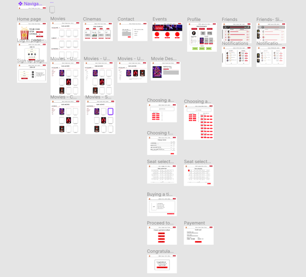
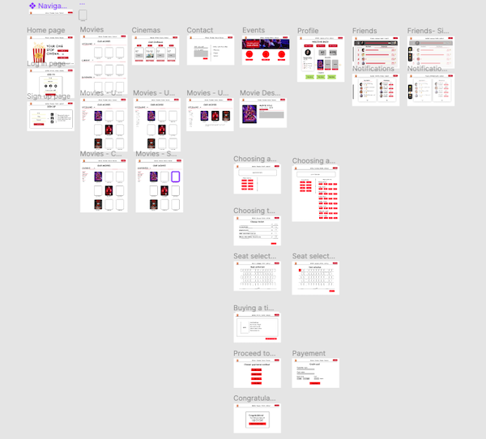

About the project
Learning and using user centred interaction design techniques to create the (information) structure of an interactive
digital concept. These design techniques help to define relevant requirements
with the intend to create a user-friendly application that fulfils user needs.
Translate business goals and user needs into a user centred system structure that
facilitates a fluent user – system interaction.
Correctly utilize given interaction design techniques to create, show and
communicate an interaction design.
Describe an interaction design process in a written report that shows the cohesion
between the different steps in the design process.
Present arguments for the value of your interaction design concept in a written
report that conveys the coherence between problem definition and the end result.
About the process
This course followed the d.school design-thinking process:
empathize - learn how to create design brief + user stories
define - value proporsition, actors and user cases, task diagrams
ideate - creativity and ideation, scenarion
prototype - flowchart, sitemap, taxonomy, wireframes
test
 
